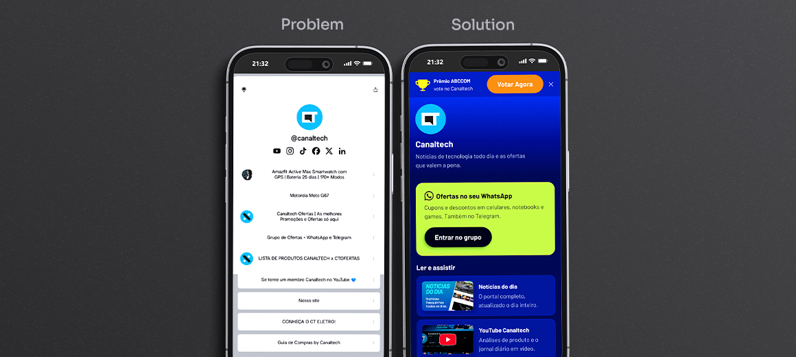
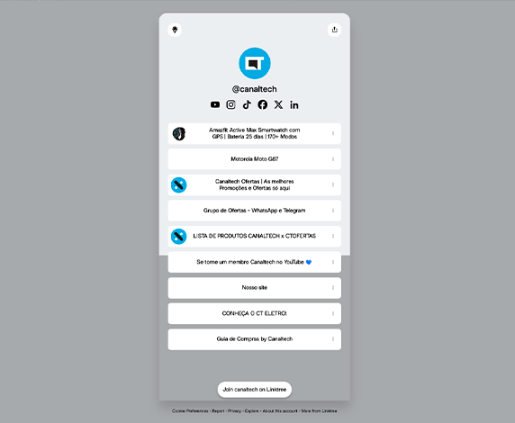
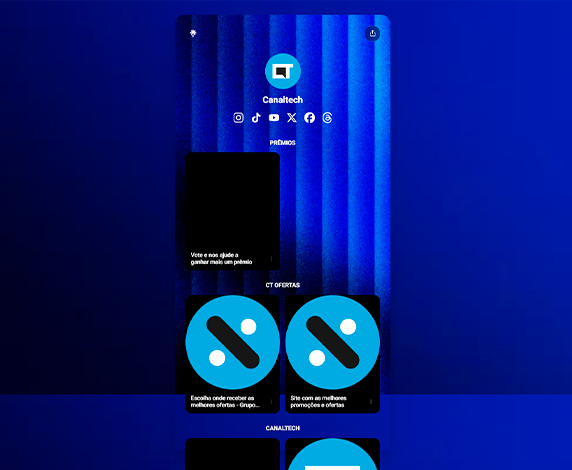
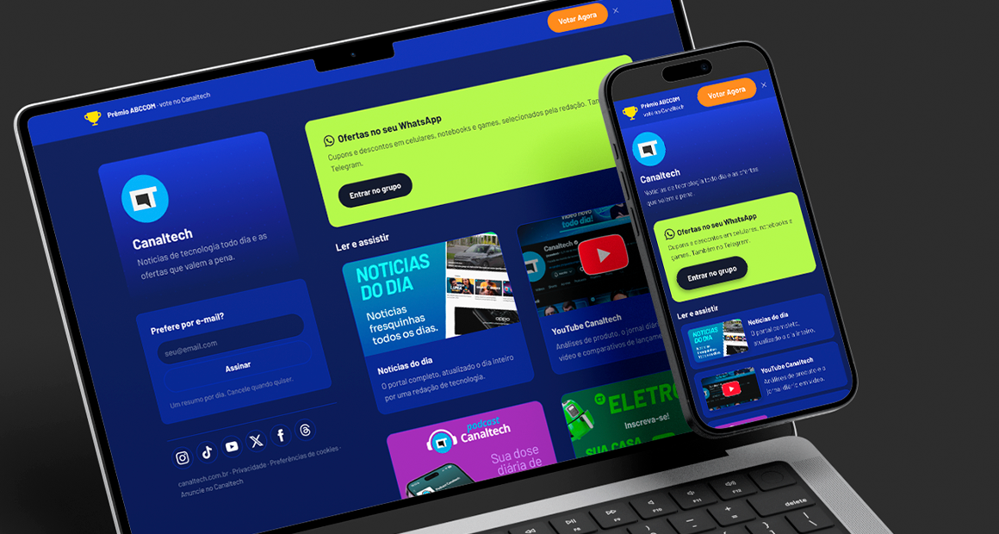
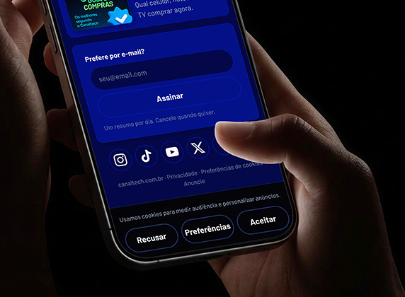
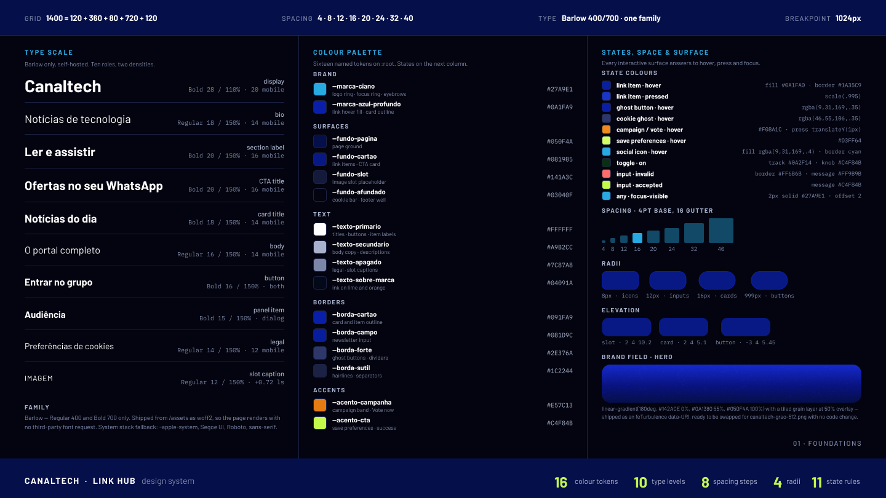
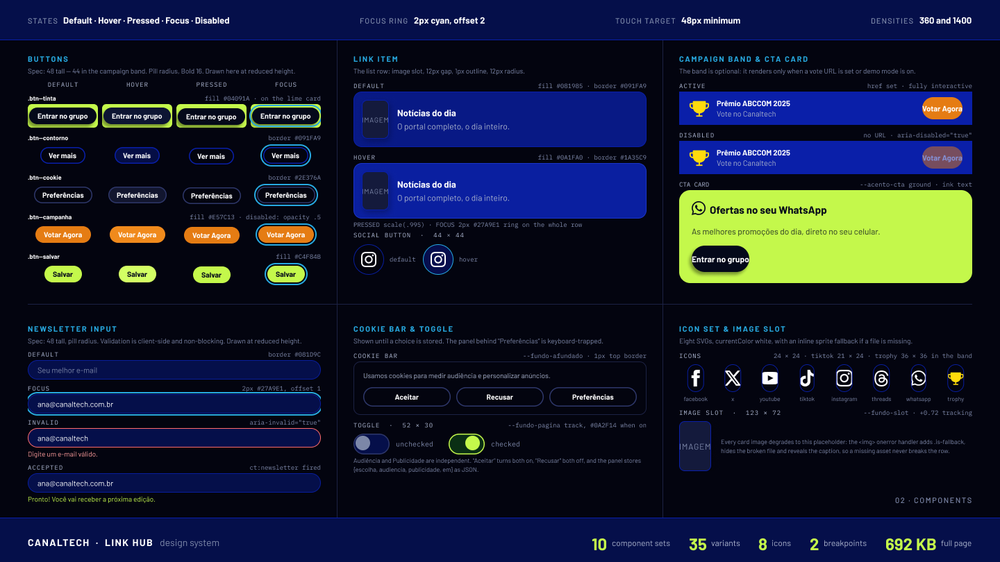
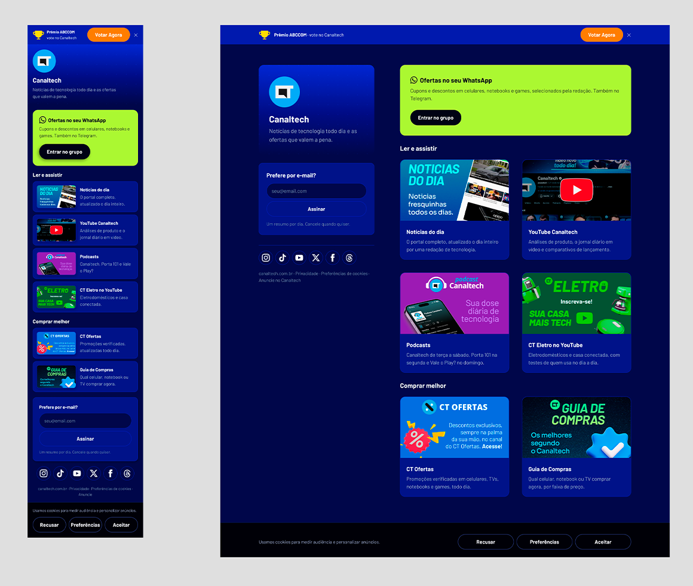
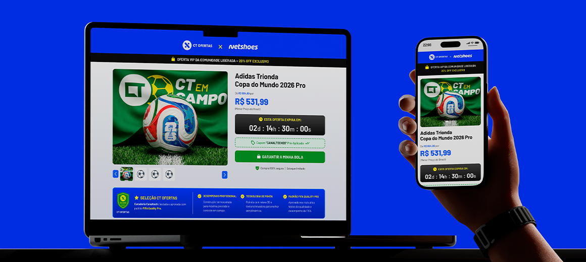
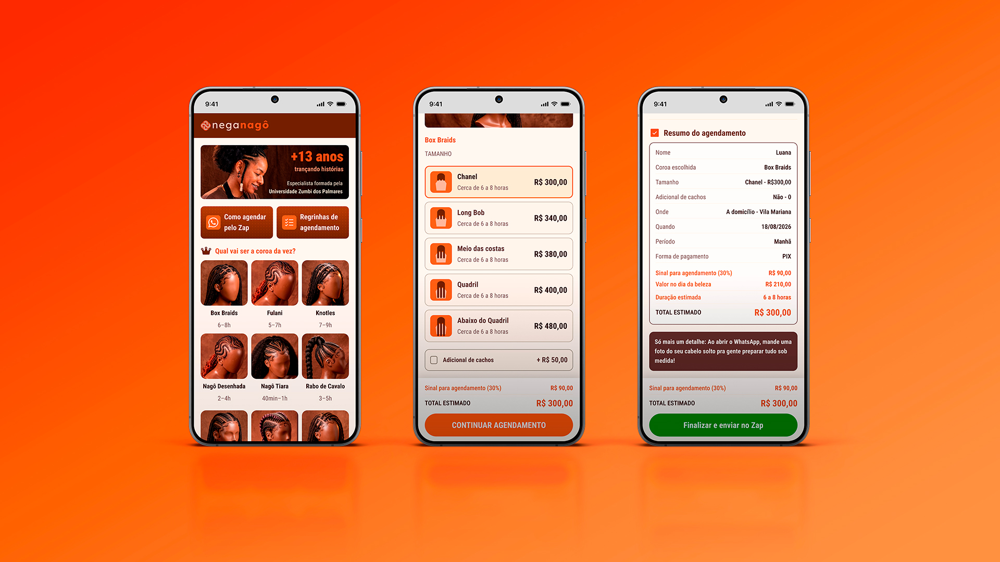

Projeto real · design system, IA no fluxo e código
O link da bio era alugado. A audiência era nossa — e o dado, de ninguém.
A Canaltech distribuía oito destinos por um Linktree. Funcionava como índice e falhava como produto: sem marca, sem estado, sem consentimento e sem um único evento de clique que voltasse para casa. Refiz como página própria — design system, acessibilidade, telemetria e um HTML único que o time publica sem build.
- Cliente
- Canaltech hub de links próprio
- Papel
- Design system e design engineer
- Entregas
- Design system · UI HTML único · acessibilidade
- Feito com
- Claude Code ⇄ Figma via MCP HTML, CSS e JS · sem build Playwright
- Período
- 2026 · solo 3ª geração da página
Visão geral · Double Diamond
O projeto inteiro em uma tela, se você só tiver um minuto
Onde a audiência estava indo sem deixar rastro, e o que virou padrão depois. As quatro etapas abaixo aparecem em detalhe no resto da página.
Espaço do problema
A página de links era alugada, plana e muda
Espaço da solução
Uma superfície própria que mede a si mesma
01
Descobrir
Diverge
Três gerações da mesma página, as duas primeiras alugadas
Oito destinos concorrendo no mesmo peso visual
Nenhum evento de clique chegando ao analytics da própria casa
Consentimento e privacidade sob a regra de um terceiro
02
Definir
Converge
O problema não é a lista: é não ser dona da superfície
Critério: publicável pelo time sem build e sem dependência
A página precisa medir a si mesma
Marca, estado e consentimento passam a ser requisito
03
Desenvolver
Diverge
Design system com 16 tokens de cor e 11 regras de estado
Campo de marca com degradê e grão, do Figma direto para CSS
Painel de consentimento que o frame estático não previa
Modo demonstração para a equipe ver a página inteira
04
Entregar
Converge
HTML único de 55 KB, sem build e sem dependência
176 asserções automatizadas cobrindo estados e consentimento
Protótipo no GitHub Pages para circular antes de publicar
Dois boards 16:9 documentando o sistema inteiro
Meu escopo
Diagnóstico→ Design system→ UI e acessibilidade→ Front-end e telemetriaDo diagnóstico ao HTML que o time publica.
01 · O problema
A página existia. A propriedade dela, não.
Uma bio no Instagram manda a audiência para um único link. Esse link era um Linktree: bom como índice, incapaz como produto. A marca virava um avatar, os oito destinos tinham o mesmo peso, e o clique — o único sinal real de interesse — ficava do lado de fora.
3
gerações da mesma página; as duas primeiras alugadas
8
destinos concorrendo no mesmo peso visual
0
eventos de clique no analytics da própria casa
0
controle sobre consentimento, marca e estados
02 · Antes e depois
A mudança não foi de layout. Foi de propriedade.
O mesmo objetivo — levar quem vem da bio até oito destinos — pelos dois caminhos. O que sai no meio não é enfeite: é tudo o que a página alugada não conseguia fazer de dentro.
Como era
Leitor abre a bio e cai numa lista hospedada por terceiro
Oito destinos com o mesmo peso, sem seção e sem hierarquia
Marca reduzida a um avatar redondo sobre uma cor de fundo
Sem faixa de campanha, sem estado de foco, sem rota de teclado
Consentimento e dado de clique ficam com a plataforma
Qualquer ajuste depende do painel de outra empresa
Os passos 3, 4, 5 e 6 são o custo de alugar: nenhum deles é resolvível de dentro da ferramenta.
Como ficou
Leitor abre uma página da Canaltech, com o campo de marca no topo
Hierarquia real: faixa de campanha, CTA, seções e oito destinos com pesos diferentes
Clique, newsletter e consentimento viram evento no analytics da casa
A página é um arquivo. Sobe no domínio da Canaltech sem build, responde a hover, press, foco e teclado, e degrada sozinha se um asset faltar.



03 · Restrições
As regras que existiam antes do primeiro pixel.
Não era um projeto de tela livre. O que dava para fazer já estava cercado por quem publica, por onde publica e por quanto custa manter depois que eu sair de perto.
Publicação
O time de dev publica, não constrói. Sem build, sem bundler, sem dependência: precisa chegar como arquivo pronto.
Hospedagem
Sem servidor de aplicação. A página tem que funcionar como estático em qualquer lugar que a Canaltech já use.
Desempenho
O tráfego vem da bio, no celular, muitas vezes em rede ruim. Nenhuma requisição a terceiro — fonte inclusive.
Privacidade
Consentimento é requisito, não enfeite. A página mede clique, então pergunta antes e guarda a resposta.
Resiliência
Se um asset faltar no deploy, a linha não pode quebrar. Todo ícone e toda imagem têm plano B no próprio HTML.
Campanha
A faixa de evento precisa entrar e sair sem tocar no layout, porque a votação tem data para acabar.
04 · Decisões de produto
Quatro decisões que o frame estático não respondia.
O Figma entrega a página parada. Produto acontece no que ele não desenha: o que o botão faz quando não existe destino, o que a barra faz na segunda visita, o que a página faz quando o arquivo some do servidor.
01
Estados viraram regra, não improviso
O frame trazia só o repouso. Derivei 11 regras de estado dos próprios tokens — hover, press, foco, inválido, aceito e o toggle ligado — e documentei cada uma no board do design system.
Por quê: sem isso, cada dev inventa um hover diferente e a página envelhece em duas sprints.
02
O painel de consentimento foi construído do zero
O componente do Figma só previa o botão "Preferências", sem destino. Montei o painel inteiro com os tokens existentes: diálogo modal, foco preso, ESC, clique no fundo e trava de rolagem.
Por quê: um botão que não abre nada é pior do que não ter botão — e a LGPD não é opcional.
03
Sem destino, o botão se declara desligado
A faixa de campanha depende de uma constante.
Preenchida, o botão é link. Vazia, ele perde o href, vira
role="button" com aria-disabled e para de responder ao clique,
em vez de virar âncora morta.
Por quê: a votação tem data para acabar, e quem desliga a campanha não deveria precisar abrir o código.
04
O grão do hero saiu do Figma como código
A camada de grão no arquivo era um cinza chapado, com
o nome pedindo a troca por um PNG. Reproduzi o ruído em CSS com
feTurbulence — sem arquivo e sem requisição. Quando o PNG chegar, ele assume
sozinho.
Por quê: entregar dependendo de um asset que ainda não existe é entregar pela metade.
05 · Consentimento e privacidade
Medir clique obriga a perguntar antes.
A barra de cookies do frame tinha três botões e nenhum destino. Virou fluxo completo: escolha guardada, painel navegável por teclado e um formato de consentimento que sobrevive à próxima mudança de regra.
Aceitar, Recusar e Preferências — os três com alvo de 48px
Painel modal com role="dialog", aria-modal e foco preso dentro
ESC, clique no fundo e trava de rolagem do corpo
Dois consentimentos independentes: audiência e publicidade
A escolha vira JSON com escolha, audiencia, publicidade e data
O formato antigo, em texto puro, continua sendo lido — quem já respondeu não é perguntado de novo
O que isso destrava.
Sem consentimento registrado, nenhum evento de clique pode ser atribuído. É essa caixa que separa uma página que mede de uma página que espiona.

06 · Método
O arquivo entrou por MCP e voltou como sistema.
Quase todo fluxo de IA em design anda numa direção só: ou gera tela a partir de prompt, ou gera código a partir do design. Aqui o frame foi lido de dentro do editor de código, virou HTML testado, e o sistema que saiu do código voltou para o Figma como dois boards — na mesma página deste arquivo.
Diagnóstico e contrato
Humano · decisão
O que a página precisa fazer que a alugada não fazia: marca, hierarquia, consentimento e medição. Sai escrito, antes de existir tela.
Decisão minha · o que entra e o que fica de fora
Figma → Claude
Assistido · transporte
O frame é lido por MCP: nós, variáveis, tipografia, grade e assets. Nada é descrito de memória.
Sistema, estados e lacunas
Humano · autoral
É aqui que o produto acontece. Os 16 tokens viram custom properties com o mesmo nome, e as 11 regras de estado, o painel de consentimento e os fallbacks — que o frame não previa — são decididos um a um.
Decisão minha · hierarquia, estados, consentimento, fallback
Claude → HTML
Assistido · corrigido
O código sai com os tokens mapeados um a um, e é revisado à mão antes de virar entrega.
Prova e volta
Humano · controle
176 asserções rodando contra o arquivo que o time recebe. Depois o sistema volta para o Figma como dois boards 16:9.
Decisão minha · o que é fiel e o que precisa ceder
Por que a volta importa
Num fluxo de mão única, o arquivo do Figma morre no handoff: vira imagem de referência que desatualiza no primeiro ajuste de código. Fechando o ciclo, o sistema que está no arquivo e o sistema que está no HTML são o mesmo — e os dois boards provam isso, componente a componente, estado a estado.
Onde a IA não decide
Ela move artefato entre etapas e executa o que já foi definido. As decisões que sustentam este projeto — parar de alugar a superfície, medir o clique na própria casa, pedir consentimento antes de medir — são de produto. Nenhuma saiu de prompt.
O mesmo método, em escala
O que este projeto deixou pronto não é uma página: é um molde. O sistema, a suíte e o modo demonstração valem para a próxima superfície da casa sem começar do zero.
Claude Code ⇄ Figma · MCP
Leitura e escrita no mesmo laço
Playwright
176 asserções, sem QA manual a cada ajuste
Boards 16:9
Documentação gerada a partir do próprio código
O custo marginal do próximo link-in-bio da casa não é uma página nova: é trocar os destinos, rodar a suíte e publicar.
07 · Design system
Dez componentes, 35 variantes, e nenhum hover para inventar.
O sistema não é uma paleta bonita: é o contrato que faz a próxima pessoa acertar o estado sem precisar perguntar. Os nomes das variáveis no Figma são os mesmos nomes das custom properties no CSS, um a um.
#27A9E1 · anel de foco
#0A1FA9 · hover do item
#050F4A · fundo da página
#081985 · cards e destinos
#C4F84B · bloco do WhatsApp
#E57C13 · botão de votar
Seis dos dezesseis tokens de cor. Os outros dez — texto, bordas e superfícies — estão no board 01, cada um com o uso escrito ao lado.
Os dez conjuntos
Botão
5 variantes × 4 estados
tinta, contorno, cookie, campanha e salvar
Item de lista
2 estados
repouso e hover; press por escala
Botão social
2 estados
44 × 44, borda vira ciano no hover
Faixa de campanha
2 estados
ativa e desabilitada por aria
Card de CTA
1 variante
fundo lima com tinta escura
Campo de e-mail
4 estados
repouso, foco, inválido e aceito
Barra de cookies
1 variante
três ações com alvo de 48px
Toggle
2 estados
desligado e ligado
Slot de imagem
1 variante
123 × 72 com legenda de fallback
Conjunto de ícones
8 ícones
SVG com sprite embutido de reserva
- 16
- tokens de cor
- 10
- níveis de tipografia
- 8
- passos de espaçamento
- 4
- raios
- 11
- regras de estado
- 10
- conjuntos de componentes


08 · Engenharia
Um arquivo. Zero dependência. Zero passo de build.
O que o time recebe é um index.html e uma pasta de assets. Abre no
navegador, sobe em qualquer estático e não tem nada para instalar antes — porque quem publica
não é quem constrói.
55 KB
o HTML entregue, sem minificar
0
dependências, pacotes e passos de build
176
asserções automatizadas em Playwright
8
ícones SVG com sprite de fallback embutido
A fonte é servida do próprio repositório: nenhuma requisição sai para terceiro
Todo <img> carrega um onerror que troca pelo sprite inline e mantém a linha de pé
Um build opcional inlina tudo num arquivo só, para circular por e-mail sem deploy
Modo demonstração por query string: ?demo=1 abre cookies e campanha para a equipe ver o desenho inteiro
Grade desktop 1400 = 120 + 360 + 80 + 720 + 120, com a coluna de identidade sticky
Um único breakpoint, em 1024px — mobile 360 e desktop 1400
09 · Medição
A página passou a responder perguntas que antes ninguém conseguia fazer.
Três eventos saem da página para o analytics da própria Canaltech. Não é painel de vaidade: é a diferença entre saber que a bio "funciona" e saber qual destino paga a próxima pauta.
ct:link
id · href · label
Qual destino a audiência realmente usa, por posição na lista e por campanha no ar.
ct:newsletter
email
Quanto da audiência que vem de social vira base própria, sem intermediário.
ct:cookies-consentimento
escolha · audiencia · publicidade · data
Que fatia da base aceita medição — e, portanto, o que pode ser atribuído com honestidade.
Perguntas que passam a ter resposta
O CT Ofertas ganha ou perde para o YouTube quando a faixa de campanha está no ar?
A campanha canibaliza os destinos de baixo, ou levanta a página inteira?
Vale manter oito destinos, ou cinco convertem o mesmo com menos ruído?
Qual fatia da audiência aceita medição — e o que isso faz com a atribuição do resto?

10 · Números
O que está medido — e o que ainda não está.
Todo número abaixo é de construção e pode ser conferido no repositório. Nenhum é de audiência, porque a página está pronta e testada, não publicada.
3ª
geração da página — a primeira própria
1
arquivo HTML entregue ao time de dev
0
dependências e passos de build
55 KB
o HTML; 692 KB com todos os assets
176
asserções automatizadas passando
10
conjuntos de componentes documentados
35
variantes desenhadas nos boards
11
regras de estado especificadas
3
eventos de telemetria saindo da página
8
destinos com hierarquia definida
O que não está aqui.
Nenhum número de tráfego, clique ou conversão. Quando a página subir, os três eventos da seção anterior passam a alimentar exatamente essas colunas — e aí este case ganha uma seção de resultado que hoje seria chute.
11 · Em aberto
O que eu deixaria na mesa do próximo.
Nada aqui é surpresa de última hora: são as decisões que ficaram conscientemente pendentes, com o motivo de cada uma.
O PNG do grão do campo de marca ainda não chegou. O CSS cobre com feTurbulence e o arquivo assume o PNG sozinho quando ele entrar na pasta, sem tocar no código.
O modo demonstração está ligado por padrão para a equipe ver a página inteira. Precisa virar false antes de publicar, e isso está sinalizado no topo do arquivo e no README.
A votação da ABCCOM tem data para acabar: confirmar a janela antes de subir a faixa de campanha.
Sem dado de produção, a hierarquia dos oito destinos é hipótese. Deve ser revista no primeiro mês, com os eventos na mão.
Não houve teste com leitor de tela real — só verificação de foco, rótulo, ordem de teclado e contraste.
12 · Mais
Outros projetos

CT em Campo
Uma ativação de Copa que não cabia no template do portal. Superfície dedicada, design system, motion e front-end — com o patrocinador dividindo tela com ninguém.

Nega Nagô
Redesenho do catálogo de uma trancista para acabar com a conversa de ida e volta. Pesquisa, design system e front-end — com resultado medido na agenda da Mayara.
Disponível para trabalhar
Desenho, escrevo o código e digo o que não deu certo.
Treze anos de design, cinco deles na Canaltech entre design system, marketing e comercial. Se você tem uma superfície que precisa sair pronta e medida, e não especificada, me chama.
© 2026 Erick Teixeira
oerickteixeira@gmail.com · São Paulo